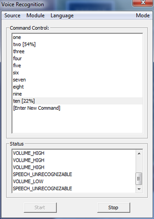

Sample: voice_recognition(.vs) |
Top Previous Next |
|
The FF_SpeechRecognition and FF_SpeechRecognition.cs samples demonstrate how to use the voice recognition module interface for voice command and control and dictation, in C++ and C# respectively. The sample main window is shown in Figure 149. The menu can select the audio input source, the recognition module, the language (based on available settings of the recognition module) and the recognition mode (dictation or command and control). The status window shows the progressing status. Click the Start button to start dictation or command and control, and the Stop button to stop the operation. During dictation, the dictation window shows the recognized sentence, as similarly shown in Figure 150. For command and control, click [Enter New Command] to enter a list of new commands. Then click the Start button to start command and control. The sample shows all hypotheses with confidence scores in the command and control window, as similarly shown in Figure 151. Figure 149: Voice Recognition Sample Main Window Figure 150: Voice Recognition Dictation Window  Figure 151: Voice Recognition Command Control Window When in the dictation mode, from the Mode menu, you can add new vocabulary to the speech engine. A vocabulary file is just a text file that contains the list of words. An example is under the examples sub-directory of the sample folder. When in the command and control mode, from the Mode menu, you can select to set the command and control grammar through the JSGF file (grammar specification.) See Java* Speech Grammar Format for details. JSGF file examples are under the examples sub-directory of the sample folder.
|